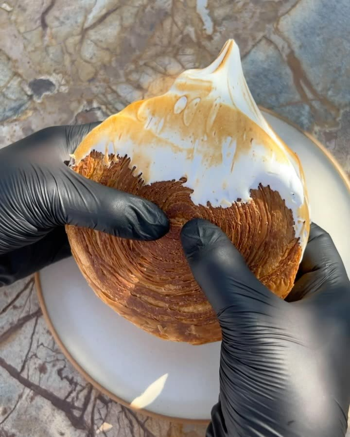
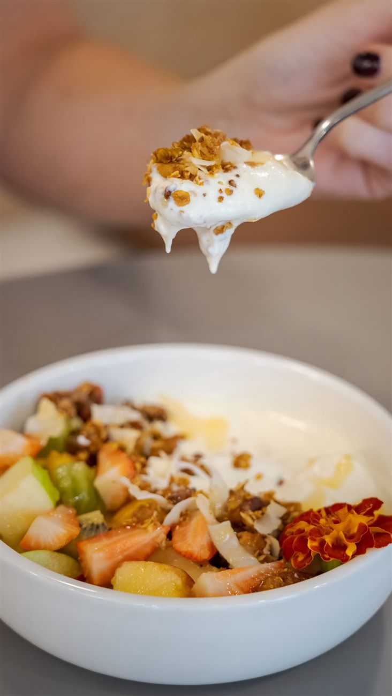
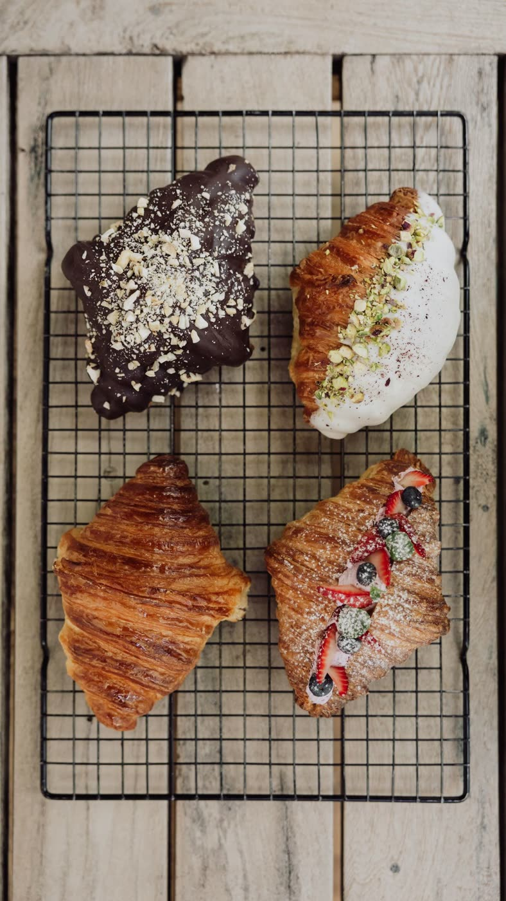

DESAYUNOS & PASTELERÍA
Medialunas, croissants rellenos, rolls NY, budines, alfajores y scones caseros. Armá tu combo con infusión: Completo, Lightweight o Baby Breakfast, con tostones, huevos y yogur con granola. Con opciones veganas y sin TACC.